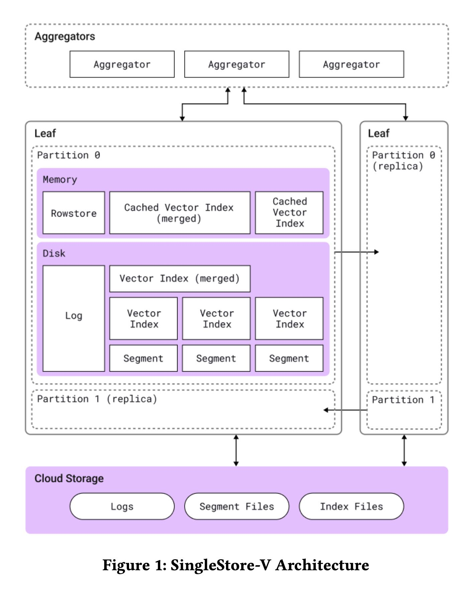
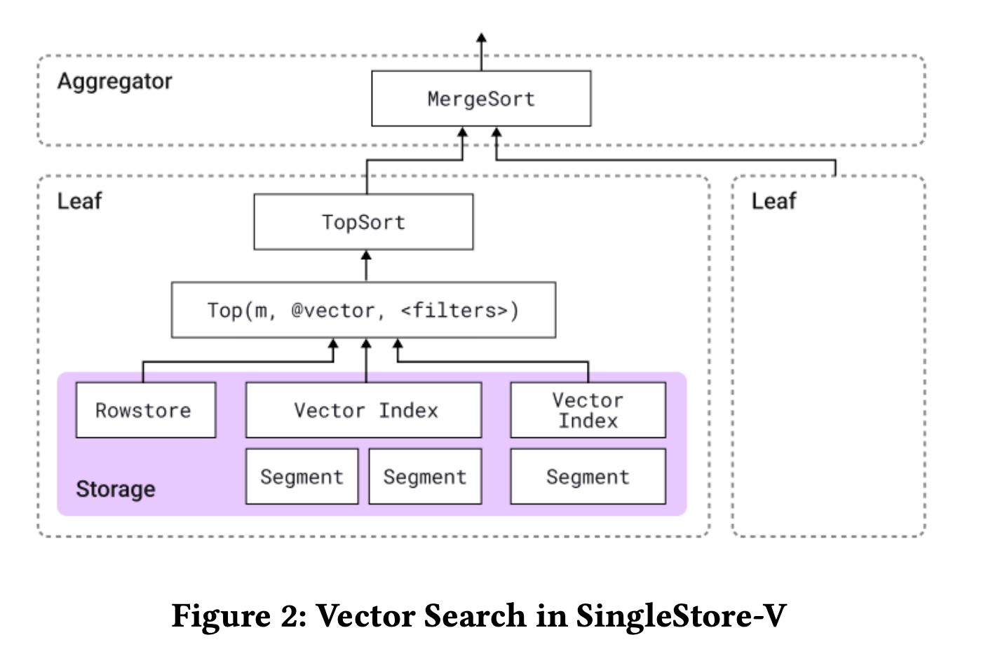
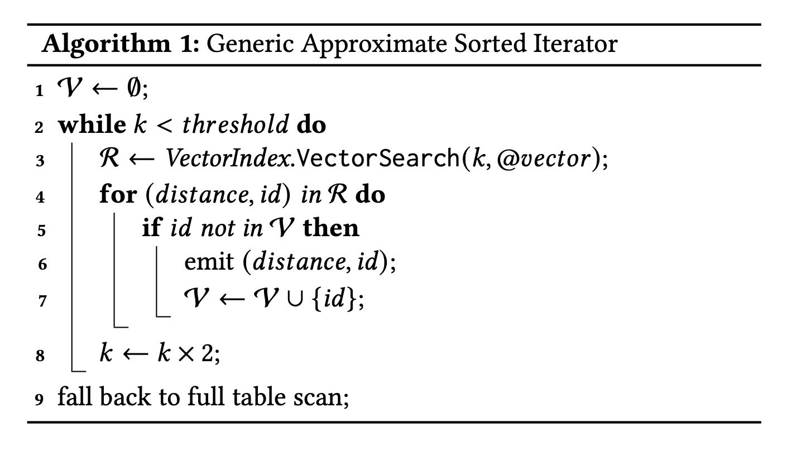

SingleStore-V An Integrated Vector Database System in SingleStore
如何把vector search实现在通用数据库里面去，实现起来有几个问题：
- 怎么存储vector data/index
- 怎么实现各种vector search功能
vector data还是放在segment file里面，每个segment file会有一个对应的vector index文件，以及多个segments之间会有个vector index文件。因为SS本质上还是HTAP，TP上还是in-memory rowstore，所以这个里面也需要存放vector index来索引rowstore data.

SS实现pluggable vector index. 可以给vector增加不同的索引：不同的索引在recall ratio, build cost, search cost, 是否支持next等特性都有所不同，所以支持多个vector index是很有必要的。auto vector index可以自动改进vector index算法和参数，不过也没细说具体的算法，只是简单地说了下启发式逻辑。
ALTER TABLE t
ADD VECTOR INDEX (v)
INDEX_OPTIONS '{"index_type":"IVF_PQFS",
"metric_type":"EUCLIDEAN_DISTANCE",
"m":250, "nlist":512, "nprobe":8}';
vector search支持下面几个功能：
- non-filtered vector search (order by limit)
- filtered vector search
- combinging fulltext and vector search
- vector range search & vector range join
所有这些vector search都依赖于一个算子 `top(k, exprs, filters)` : 按照 `filters` 进行数据过滤，按照 `exprs` 进行排序取 `k` 个头部元素。上面这几个功能都可以映射到 `top` 这个算子上。

filtered vector search是non-filtered vector search的扩展版本，实现方式大致是：
- 针对这个table产生一个iterator. 这个iterator可以按照 `exprs` 顺序不断地输出rows
- 在外层按照filters进行过滤，然后之选择前面k个元素。
某些vector index不支持iterator这种方式而只支持top-k这样算法的话，那么就需要多轮迭代+去重来模拟iterator.

combining fulltext and vector search 我没有太看懂有什么高效的算法
[!NOTE]
SingleStore-V addresses this issue by using a Top() filter that selects the top-k rows with the highest combined score. During execution, this Top() filter employs an iterative merging algorithm, similar to what Milvus does for their multi-vector query [50]. The iterative merging algorithm proves effective when the function combining individual scores is monotonic and relies solely on the generic top-k interface provided by the vector index algorithms.
vector range search 可以认为也是一个filtered vector search. vector range join 则使用了nested loop join来实现：join条件上通常不是等值条件，没有办法像hashjoin有各种优化手段。